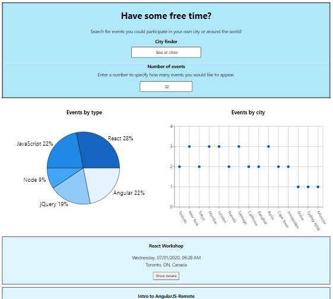

Meet app
A progressive web app to locate events around the world
See web app online
See project on Github
Project description
Objective
The objective of that project was to build a serverless, offline working and progressive web application (PWA) with React using test-driven development (TDD) and behavior-driven development (BDD) techniques. The web app also needed to use Google Calendar API to fetch different upcoming events in different cities for users benefit.
The web app
Meet app was created to serve as a platform to locate different events around the world. Users can use Meet app to have access to different information about different events. They can search for events based on targeted cities, or for all cities. They can also specify how many events they want to see displayed on their screen. This information is presented visually with dynamic scatter and pie charts.
- Scatter chart displays how many events take place in each city
- Pie chart displays the popularity of event genres
Events information is also presented textually below the visuals. If users want to have more information about a specific event, they can expand that event to reveal more details, and then collapse it to the original presentation mode when finished. For each event, a hyperlink allowing users to switch from the web app to Google Calendar is given as well.
All views are responsive to display well on any device. The web app is hosted online to make it shareable. However, users can also install Meet app as a web app on their computer desktop or their mobile phone screen for quicker access. The web app can also be used when the user is offline.
Technical information
Meet app is built using React. The different React components for the web app have been created following industry standards for project folders and files structure. The web app also uses the Google Calendar API to display events on users UI and utilize OAuth2 authentication flow to allow users accessing the web app. Meet app also uses serverless functions (AWS lambda) for the authorization server.
| Summary of the technologies, languages, techniques, frameworks and libraries used |
|
|---|---|
| React | Javascript |
| HTML | CSS |
| Visual Studio Code | Jest (testing framework) |
| Cucumber (testing framework) | Puppeteer (testing framework) |
| Atatus (app performance management tool) | Recharts (React chart library) |
| Lighthouse (app analyzing tool) | Functional programming |
| Object-oriented programming | Test driven development (TDD) |
| Behavior driven development (BDD) | User stories, Gherkin syntax and test scenarios |
My role
My role in this project was to create Meet app from scratch, following the project requirements.
| Summary of my work, tasks and roles |
|---|
| Created all the pages constituting the web app |
| Coded everything requiered following different logics (such as specific features for cities and number of events filters, visual charts, etc.) |
| Developed test scenarios and wrote code for each unit, integration, user acceptance and end-to-end tests |
| Performed several tests / debugging to ensure the proper functioning of the web app while meeting all the project requirements |
| Managed all interactions on Github (commits, pull requests, merging branch, etc.) |
| Designed the web app with visuals and colors for a modern and pleasant style |
| Implemented responsiveness so that the web app is easily usable on all device screen sizes |
| Deployed and host the web app |
| Wrote the project description and technicalities in the README document prepared for anyone interested |